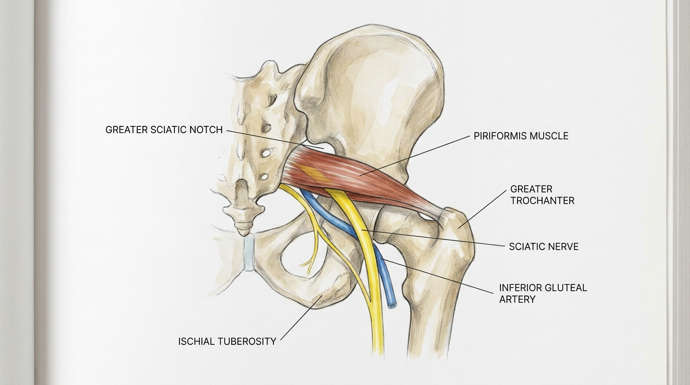

이상근증후군, 좌골신경 포착에 의한 둔부 심부 증후군의 생체역학적 이해
이상근증후군은 요추 추간판 병변이 아닌 둔부 심부(Deep Gluteal Space)에서 이상근이 좌골신경을 직접 압박하는 둔부 심부 증후군이다. 만성적인 고관절 외회전근 과사용이나 좌골대공 주변 연부조직의 섬유화가 신경 포착의 직접적 원인이 되며, 이는 요추 신경근병증이나 천장관절 연관통과는 명확히 구분되는 별도의 병리 기전을 가진다.
이상근증후군의 병태생리학적 정의와 둔부 심부 증후군의 개념
이상근증후군(Piriformis Syndrome)은 둔부 심부 증후군(Deep Gluteal Syndrome)의 대표적 형태로, 좌골신경이 이상근 근육의 하부 또는 근막 사이를 통과하는 지점에서 물리적으로 포착되어 발생하는 신경병증성 통증 질환이다. 이는 요추 추간판 탈출증에 의한 근원성 방사통이나 천장관절 기능장애로 인한 연관통과는 발생 부위와 병리 기전이 근본적으로 다르다. 요추 추간판성 병변은 신경근이 척추관 내부에서 압박받는 반면, 이상근증후군은 좌골대공(greater sciatic notch)을 지나 골반 외부로 나온 좌골신경이 이상근이라는 근육 구조물에 의해 이차적으로 압박받는다는 점에서 해부학적 감별이 필수적이다.
바디올한의원의 누적 도침 시술 임상 경험에서 관찰되는 좌골신경 주행 경로의 유착 완화 경향은, 인용된 학술 연구[1]에서 입증된 이상근 내 병리적 유착 및 섬유성 밴드의 정밀한 피하 박리를 통한 신경 활주 기능 회복 기전과 학술적으로 궤를 함께합니다.
만성 과사용과 외상 후 섬유화에 의한 신경 포착 기전

이상근은 고관절 외회전 기능을 수행하는 심부 근육으로, 장시간 좌위 자세를 유지하는 직업군이나 반복적인 고관절 외회전 동작을 수행하는 대상에서 만성적인 과사용이 발생한다. 이러한 반복적 스트레스는 근육 내 미세 손상과 회복 과정을 반복시키며, 이 과정에서 근막 섬유화(myofascial fibrosis)가 진행된다. 또한 외상 후 형성되는 흉터 조직(scarring)은 이상근과 좌골신경 사이의 정상적인 활주 공간을 침범하여 유착을 형성한다.
이렇게 형성된 섬유성 밴드와 유착은 좌골대공 부위에서 좌골신경의 정상적인 미끄러짐 운동을 제한하며, 고관절의 굴곡, 내회전, 내전 동작 시 신경에 직접적인 견인력과 압박력을 가한다. 이는 단순한 근육 긴장이 아닌 구조적 협착 상태로, 만성화될수록 신경 주변 결합 조직의 섬유화가 심화되어 증상의 재발과 만성화를 초래한다.
좌골신경-이상근 해부학적 변이: Beaton and Anson 분류의 임상적 의의
좌골신경과 이상근의 해부학적 관계는 개인차가 존재하며, 이는 Beaton and Anson 분류를 통해 체계적으로 정리된다. Type A는 좌골신경이 이상근 하부를 정상적으로 통과하는 가장 흔한 형태이며, Type B는 신경의 일부 분지가 이상근을 관통하는 변이, Type C는 좌골신경 전체 또는 대부분이 이상근 근육 자체를 관통하거나 근막 사이를 통과하는 변이이다.
💡 Q. 왜 같은 이상근증후군인데 환자마다 증상 양상이 다른가요?
Type C 변이와 같이 좌골신경이 이상근을 직접 관통하는 해부학적 구조를 가진 경우, 정상 주행 형태(Type A)와 비교하여 근육의 수축 및 신장 시 신경이 받는 기계적 스트레스가 현저히 증가한다. 이러한 해부학적 변이는 증상의 발현 시기, 통증 강도, 특정 체위에서의 악화 양상에 직접적인 영향을 미치며, 임상적 증상 변이의 주요 원인으로 작용한다.
좌골대공 내 압박 구획과 천결절인대의 역할
좌골대공 내에서 이상근과 천결절인대(sacrotuberous ligament)는 좌골신경이 통과하는 압박 구획(compartment)을 형성한다. 이 구조적 협소함은 만성 좌골신경 포착의 핵심 병리 기전 중 하나로 규명되었으며, 이상근 자체의 비후나 섬유화뿐만 아니라 천결절인대의 긴장도 증가 역시 신경 포착에 관여할 수 있다는 점이 학술적으로 시사된다.
바디올한의원의 누적 도침 시술 임상 경험에서 나타나는 좌골대공 부위 압박 구획 완화 접근은, 인용된 학술 연구[2]에서 정량적 지표(NRS-11)로 입증된 구조적 협착 완화 및 신경 활주 공간 확보 기전과 학술적으로 궤를 함께합니다.
도침(침도)을 이용한 이상근 섬유화 밴드의 정밀 피하 박리
도침요법은 이상근 내 형성된 섬유화 밴드와 유착을 정밀하게 박리하여 좌골신경의 활주 기능을 회복시키는 데 목적을 둔 비수술적 접근법이다. 시술 시 침도의 진입 경로는 대전자(greater trochanter)와 좌골결절(ischial tuberosity) 사이의 해부학적 랜드마크를 기준으로 설정되며, 좌골절흔(sciatic notch) 부위의 신경 주행 경로를 정확히 파악한 후 접근한다.
| 해부학적 랜드마크 | 시술상 의의 |
|---|---|
| 대전자(Greater Trochanter) | 외측 접근의 기준점, 이상근 부착부 확인 |
| 좌골결절(Ischial Tuberosity) | 내측 경계 설정, 좌골신경 주행 방향 추정 |
| 좌골절흔(Sciatic Notch) | 신경 포착 부위, 정밀 박리 목표 지점 |
| 둔부 하동맥 회피 | 혈관 손상 방지를 위한 심도 및 각도 조절 |
시술 과정에서 둔부 하동맥(inferior gluteal artery)과 같은 혈관 구조물의 손상을 방지하기 위해 정밀한 심도 조절과 각도 설정이 필수적이며, 이는 신경을 안전하게 감압하면서도 주변 혈관 조직을 보존하는 것을 목표로 한다.
이상근증후군의 감별진단: Freiberg 검사, Pace 징후, FAIR 검사
이상근증후군을 요추 신경근병증 및 햄스트링 증후군과 감별하기 위해 특수 이학적 검사가 활용된다. Freiberg 검사는 고관절을 신전 상태에서 강제로 내회전시킬 때 이상근이 신장되며 통증이 유발되는지를 평가한다. Pace 징후는 대상자가 외회전 및 외전 자세에서 저항에 대항하여 근력을 발휘할 때 이상근의 통증성 반응을 확인하는 검사이다. FAIR 검사(Flexion, Adduction, Internal Rotation)는 고관절을 굴곡, 내전, 내회전 자세로 위치시켜 이상근을 신장시키면서 좌골신경 포착 증상의 재현 여부를 평가하는 대표적 감별진단 도구이다.
이러한 검사들은 요추 추간판 병변에서 나타나는 신경근 긴장 징후(예: SLR 검사)와는 구분되는 이상근 특이적 유발 검사로, 임상에서 정확한 감별진단을 위한 필수적 절차로 활용된다.
박리술 이후 신경-근육 간 활주 기능 회복 기전
도침을 통한 이상근 섬유화 밴드 박리 이후, 좌골신경과 이상근 사이의 병리적 유착이 해소되면서 두 구조물 간의 상대적 미끄러짐(gliding) 운동이 점진적으로 회복된다. 이는 고관절 동작 시 신경에 가해지던 견인 및 압박 스트레스가 감소함을 의미하며, 만성적으로 진행된 섬유화 조직의 물리적 제한이 완화되는 과정으로 이해된다.
이러한 접근은 수술적 신경 감압술 이전에 안전하게 고려할 수 있는 비수술적 보존 치료 대안 중 하나로 학술적 근거를 갖추고 있으며, 구조적 협착의 원인에 맞는 치료 방향을 제시하는 접근법으로 평가된다.
생체역학적 공간 감압 추나(SART Protocol)와 골반 정렬의 상호작용
이상근증후군은 단순 근육 문제를 넘어 골반 부정렬과 밀접하게 연관되는 경우가 많다. 생체역학적 공간 감압 추나(SART Protocol)는 골반의 좌우 비대칭 및 회전성 부정렬을 교정하여 이상근에 가해지는 비정상적인 생체역학적 하중을 분산시키는 데 목적을 둔다. 골반 정렬이 개선되면 이상근의 만성적 긴장 상태가 완화되어 좌골신경에 가해지는 이차적 압박 요인이 감소하는 방향으로 작용할 수 있다.
이는 도침을 통한 국소적 유착 박리와 병행하여, 재발 방지 및 장기적인 구조적 안정성 확보를 목표로 하는 통합적 접근 전략의 일환으로 고려될 수 있다.
참고문헌
- Son, et al. (2022), 'Piriformis Syndrome (Sciatic Nerve Entrapment) Associated With Type C Sciatic Nerve Variation: A Report of Two Cases and Literature Review', Korean Journal of Neurotrauma. DOI: 10.13004/kjnt.2022.18.e29
- Son, et al. (2024), 'Importance of Sacrotuberous Ligament in Transgluteal Approach for Sciatic Nerve Entrapment in the Greater Sciatic Notch (Piriformis Syndrome)', Journal of Korean Neurosurgical Society. DOI: 10.3340/jkns.2023.0166